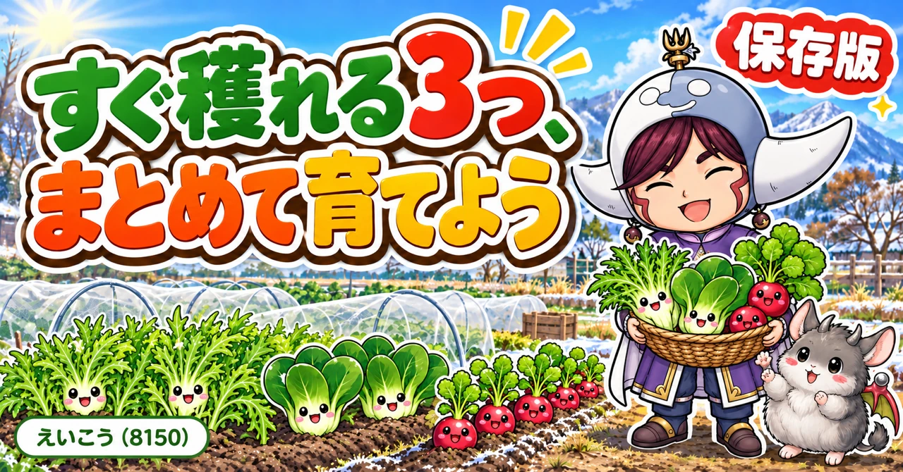
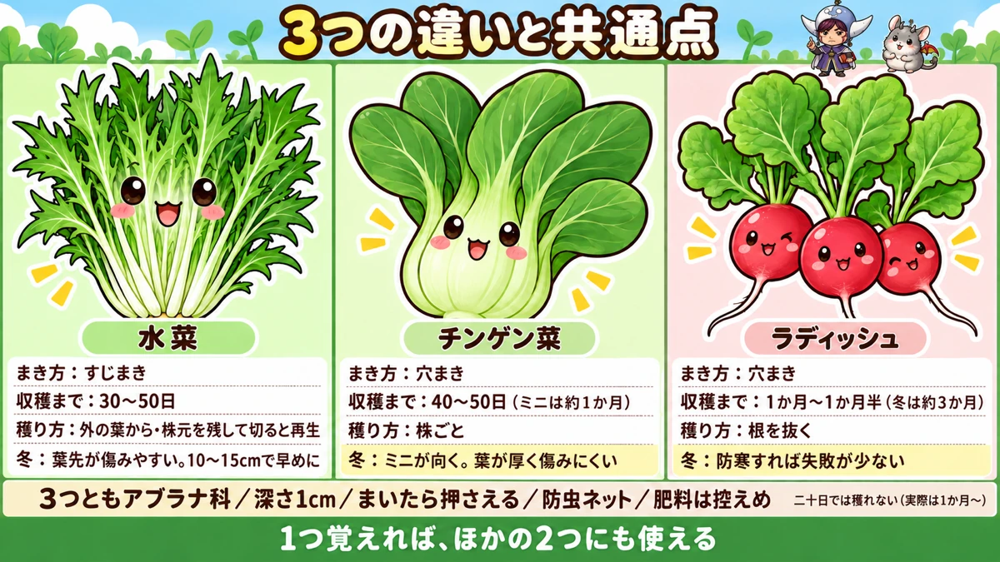
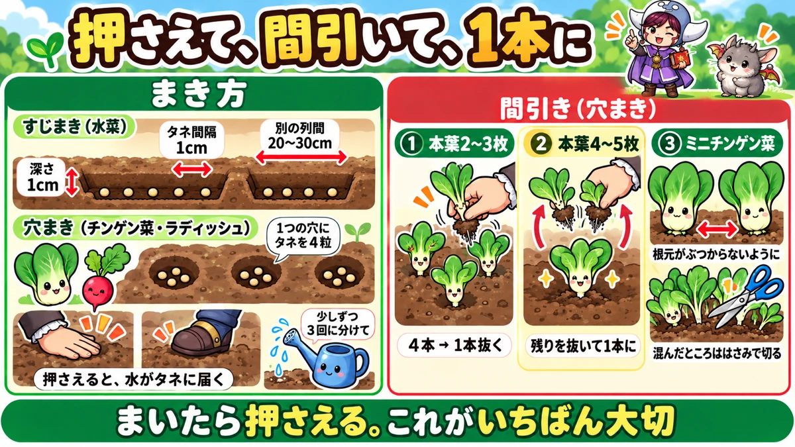
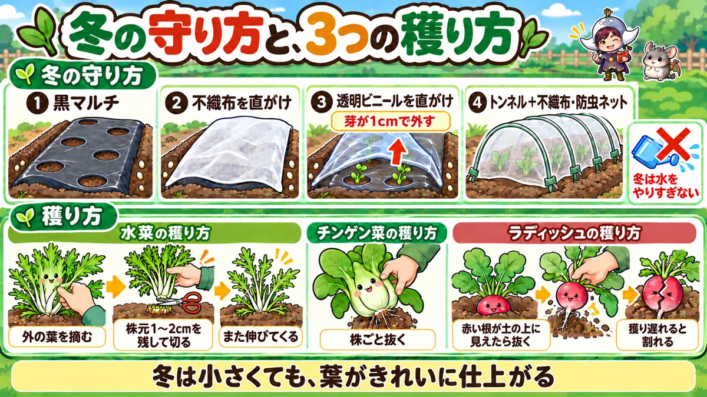

水菜・チンゲン菜・ラディッシュの育て方｜まき時、まき方、間引き、冬の育て方、収穫

📖 この記事の目次
この記事で分かること
- 水菜、チンゲン菜、ラディッシュは、どれもアブラナ科の仲間で、まいてから1か月から2か月ほどで穫れる、育つのが早い野菜です。
- 3つとも、春から秋まで長い期間まけます。防寒をすれば、冬にも育てられます。
- まき方の基本は共通です。深さ1cmほどにまき、手でしっかり押さえ、不織布と防虫ネットをかけます。
- 違いは、穫り方です。水菜は外の葉から少しずつ、チンゲン菜は株ごと、ラディッシュは根を抜いて収穫します。
- 冬にいちばん育てやすいのは、ミニチンゲン菜とラディッシュです。水菜は寒さで葉先が傷みやすくなります。
- 冬は虫がほとんどいないので、葉がきれいに仕上がります。ただ、育ちはゆっくりになります。
畑のすき間や、夏野菜を片づけたあとのうね、プランターのひとつにまいておくと、あっという間に食卓に並ぶ。水菜、チンゲン菜、ラディッシュは、そんな「すぐ穫れる」野菜の代表です。
3つは同じアブラナ科の仲間なので、育て方の基本はよく似ています。一方で、食べる部分も、穫り方も、寒さへの強さも少しずつ違います。この記事では、3つをまとめて、共通するところと違うところを比べながら書いていきます。1つを覚えれば、ほかの2つにもそのまま使えるこつが多いので、まとめて育ててみるのもおすすめです。
早見：3つの基本
水菜
- まき時：春から秋まで長くまける。3月〜10月ごろという説明も
- 収穫まで：30〜50日ほど
- 穫り方：外の葉から、または株元を残して切ると、また伸びてくる
- 冬：寒さで葉先が傷みやすい。10〜15cmで早めに穫る
チンゲン菜
- まき時：3月〜11月ごろ。ミニチンゲン菜は1月〜2月からでもまける
- 収穫まで：ふつうのチンゲン菜は40〜50日、ミニチンゲン菜は1か月ほど
- 穫り方：株ごと抜くか、株元で切る
- 冬：ミニチンゲン菜が向いている。葉が厚く、寒さで傷みにくい
ラディッシュ
- まき時：関東なら3月上旬〜11月中旬ごろ
- 収穫まで：1か月〜1か月半ほど。冬は3か月ほどかかる
- 穫り方：根が育ったら抜く
- 冬：防寒すれば、大根やかぶより失敗が少ない

3つの野菜を知る
水菜：細い葉をたくさん茂らせる
水菜は、細くぎざぎざした葉を、株元からたくさん茂らせる野菜です。生でサラダにすると、しゃきしゃきした歯ごたえがあり、鍋にも欠かせません。
水菜という名前は、昔、うねとうねのあいだに水を流して育てていたことからついた、という説が紹介されていました。お正月のお雑煮に入れる青菜は、関西では水菜だった、という話もあります。
大きく育つと株がとても大きくなり、ボリュームがあります。株の一部を切り取ったり、外の葉から少しずつ穫ったりできるので、必要な分だけ収穫できるのも便利なところです。
紫色の水菜もある
水菜には、葉の軸が紫色になる品種もあります。サラダに混ぜると彩りがよく、ふつうの水菜と並べて育てても楽しめます。タネがとても小さいので、2〜3粒ずつ落とすようにまくと、間引きが楽になります。
チンゲン菜：中国生まれで、暑さにも寒さにも強い
チンゲン菜は、根元がふっくらとふくらんだ、肉厚の葉を持つ中国野菜です。炒め物にすると、しゃきしゃきしておいしく、油と相性のよい野菜です。
中国の野菜には暑さと寒さの両方に強いものが多く、チンゲン菜もそのひとつだと説明されていました。ほかの葉物が育てにくい6月ごろでも育てやすく、冬にも強い。1年の中でまける期間がとても長い野菜です。
ふつうのチンゲン菜のほかに、半分以下の大きさで穫るミニチンゲン菜という品種もあります。育つ期間が短く、小さなうちに穫れるので、家庭菜園で特におすすめされていました。
ラディッシュ：赤い根を食べる小さな大根
ラディッシュは、二十日大根とも呼ばれる、根を食べる小さな大根の仲間です。丸くて赤いものがよく知られていますが、細長いもの、紫色のもの、赤と白に分かれたものなど、いろいろな色や形の品種があります。
根が太りやすく、初めての方でも育てやすい野菜の代表です。赤い根はサラダの彩りになり、葉も食べられます。
ラディッシュの品種選び
ラディッシュは、品種によって色や形がさまざまです。形のきれいなものがそろって穫れる割合が高いことをうたった品種もあり、タネの袋を見比べて選ぶのも楽しみのひとつです。いろいろな色の品種が混ざったタネもあり、赤や白、紫が並ぶと畑が華やかになります。
苗作りの練習にもなる
ラディッシュは、簡単に早く育つので、春にトマトやなすの苗作りを始める前の練習として育ててみるのもよい、という紹介もありました。タネをまいて、芽を出させて、間引いて育てる、という流れを、短い期間でひと通り体験できます。
「二十日」で穫れるわけではない
ラディッシュの別名は二十日大根ですが、実際には、まいてから20日で穫るのは難しい、とどの動画でも説明されていました。暖かい時期でも、1か月から1か月半ほどかかると考えておくのがよさそうです。寒い時期は、さらにゆっくりで、3か月ほどかかることもあります。
まき時と季節
3つとも、まける期間が長い
3つの野菜は、どれもまける期間が長いのが特徴です。
- 水菜：春から秋まで。3月から10月ごろまでまける、という説明もありました
- チンゲン菜：3月から11月ごろまで、とタネの袋に書かれているものがありました
- ラディッシュ：関東なら、3月上旬から11月中旬ごろまで
ほかの野菜を片づけたあとの空いた場所に、すぐまけるのが大きな利点です。
水菜は、11月にまいて年明けに
水菜は、11月にまいておくと、1月から2月ごろに収穫できる、と紹介されていました。12月に入って寒さが強くなってきたら、トンネルをかけて守ります。鍋の季節にちょうど穫れるのがうれしいところです。
水菜は、まいた直後の水をしっかりやると、株が大きく育ち、そのあとの伸びもよい、という話もありました。
秋は、虫が減っていくいい季節
秋にまくと、育つ早さと、虫の少なさのバランスがよくなります。9月の中ごろにまいたチンゲン菜が、1か月ほどで収穫できた例も紹介されていました。10月にまくと、少しゆっくりになり、40日から60日ほどかかるそうです。
春は、虫が動き出す前に
春は、育ちが早い一方で、虫も増えてきます。水菜は4月から5月ごろにまくのが、シャキシャキ感を楽しめるよい時期として紹介されていました。6月、7月になると、暑さで育ちが悪くなる葉物が多くなります。その時期でも、チンゲン菜は比較的育てやすい、とされています。
夏のチンゲン菜は、虫よけを徹底
チンゲン菜は暑さにも強いので、6月ごろにまいても育てやすい葉物です。ただし、夏は虫がとても多くなります。夏に葉物を育てるなら、防虫ネットは必ずかける、と強く注意されていました。
冬は、防寒すれば育つ
11月以降にまく場合は、防寒が必要になります。11月下旬になると、防寒をしっかりしないと難しくなる、と注意されていました。それでも、ミニチンゲン菜やラディッシュなどは、防寒をすれば冬でも育てられます。
土と肥料
肥料はあまり要らない
3つとも、育つ期間が短く、それほど多くの肥料を必要としません。前に別の野菜を育てていた場所なら、残っている肥料だけで育つ、と説明されていました。チンゲン菜は、さといもやしょうがを収穫したあとの場所に向いている、という紹介もありました。
冬は、まず肥料なしで
冬にまく場合は、思いきって肥料を入れずに育ててみて、育ちが悪いと感じたら、あとから少し追肥する、というやり方でよい、という説明もありました。
肥料を入れてすぐまくと、どうなるか
「肥料を入れたら、2週間はあけてからまく」とよくいわれます。本当にそうなのかを確かめた実験が紹介されていました。1年ほど空き地だった場所に、条件を変えた3つの区画を作り、同じ日に、かぶ、小松菜、ほうれん草、レタス、水菜をまいたものです。
- 肥料を入れずにまいた区画
- 3週間前から作っておいたぼかし肥を入れて、すぐまいた区画
- 腐葉土と米ぬか（1㎡あたり2Lと200cc）を入れた当日にまいた区画
まいてから4〜5日で芽が出はじめると、違いがはっきりしました。肥料なしとぼかし肥の区画は、アブラナ科の野菜がほぼすべて芽を出しました。一方、当日に肥料を入れた区画は、肥料の少ないうねの両はしだけ芽が出て、肥料の多いまん中に並べた小松菜は、ほとんど芽が出なかったそうです。
その後の育ちは、ぼかし肥の区画がいちばんよく、肥料なしの区画はゆっくり小さく、当日に肥料を入れた区画は、芽が出た株も育ちが悪かった、ということでした。話していた方は、肥料が分解されるときの熱や、土の乾燥、分解する微生物が養分を先に使ってしまうことなどが原因ではないか、と考えていました。
肥料を入れるなら2〜3週間前に。間に合わないなら、肥料なしでまくか、ぼかし肥のように分解の進んだものを使う。この3つの野菜でも、この考え方がそのまま当てはまります。
同じ仲間を続けない
3つとも、小松菜やかぶ、大根、白菜と同じアブラナ科です。同じ仲間の野菜を同じ場所で続けて育てると、アブラムシやヨトウムシが出やすくなる、と注意されていました。できれば別の仲間の野菜を育てた場所にまくのが安心です。
ただし、有機栽培で、いろいろな野菜を順番に回しながら育てている畑なら、1〜2回続けてもそれほど大きな影響は出ない、という説明もありました。

まき方の基本
共通の手順
3つとも、まき方の基本は同じです。
- 深さ1cmほどの穴か溝を作る
- タネをまく
- 周りから土を寄せてかぶせる
- 手のひらでしっかり押さえる
- 水をやる
- 不織布をかけ、その上から防虫ネットをかける
押さえることが、いちばん大切
どの動画でも、くり返し強調されていたのが、まいたあとに土を押さえることです。体重をかけるくらいの気持ちで、手のひらでしっかり押さえます。
押さえることで、タネと土がぴったりくっつき、土の中の湿り気が逃げにくくなります。芽が出やすい環境を作るための、大事なひと手間です。
水は、少しずつ何回かに分けて
まいたあとの水は、1か所に一気にかけると、外へ流れてしまいます。少しかけて水がしみこむのを待ち、またかける。これを3回ほどくり返すと、しっかりしみこむ、と紹介されていました。
じょうろは、うねの外で水を出し、流れが落ち着いてからうねの上を動かします。水をやる時間は、5〜10秒くらいで十分、という説明もありました。
足で踏んで押さえる方法
広い場所にすじまきするときは、手で押さえる代わりに、まいた列の上を足で踏んで歩いていく、という方法も紹介されていました。踏み固めると、タネと土がくっつく面が増え、雨や水やりの水がタネに届きやすくなります。踏んだあとが浅い溝になって、水が入りやすくなるのも利点だそうです。
芽が出るために必要なのは、温度、光、水の3つです。土を押さえずにすかすかのままにしておくと、タネが土の中で浮いた状態になり、水をやってもタネに水が当たらないことがある、と説明されていました。
すじまきの列の間隔
1つのうねに2列以上まく場合は、列と列のあいだを20〜30cmあけます。間が狭いと、育ってから葉が重なり合い、収穫しにくくなったり、風通しが悪くなったりします。30cmほどあけておくのが無難だ、とすすめられていました。
少しだけまくなら、芽を出させてから
まく量が少ないときは、水でしめらせた不織布やガーゼの上にタネを置いて、先に芽を出させてからまく方法もあります。確実に芽を出させたいときに便利です。
穴まき：チンゲン菜とラディッシュ
チンゲン菜とラディッシュは、穴あきマルチに穴まきするのが手軽です。
- ラディッシュ：1つの穴に4粒。少し押しこんでから土を寄せ、押さえる
- チンゲン菜：1つの穴に4粒ほど。深さ1cmほどの小さな穴を4つ作り、1粒ずつ落とす方法も紹介されていた
ふつうは1つの穴に2〜3粒でよいところ、寒い時期は芽が出にくいので、4〜5粒まいてもよい、という説明もありました。冬は、マルチの穴が大きすぎると土が温まりにくいので、小さめの穴のマルチを使うとよいそうです。
すじまき：水菜
水菜は、すじまきが向いている野菜です。特に冬は、すじまきのほうが芽が出やすく、収穫量も増える、と紹介されていました。
- 深さ1cmほどの溝を作る
- タネを1cm間隔くらいで並べていく
- 両側から土を寄せてかぶせ、押さえる
- 列と列のあいだは15〜20cmほどあける
マルチを張った場所ですじまきしたいときは、マルチにカッターで細長い切れ目を入れ、そこに溝を作る方法が紹介されていました。切ったマルチが風でなびいて芽に当たらないよう、押さえておくとよいそうです。
ほかの葉物と混ぜてまく
水菜やチンゲン菜のようなアブラナ科と、春菊やレタスのようなキク科の野菜を、交互に並べてまく方法も紹介されていました。キク科の野菜は虫に好かれにくいので、混ぜることで虫を遠ざける効果が期待できる、という考え方です。
水菜は、アブラナ科の中でも、ぎざぎざの葉の形のおかげで虫に狙われにくいほうだ、とも説明されていました。
キク科のタネは光を好むので5mmほどの浅さに、アブラナ科のタネは1cmほどの深さにまく、と深さを変えるのがこつです。
芽が出るまで
芽が出るまでの日数
暖かい時期なら、3つとも数日で芽が出てきます。ラディッシュは3〜5日ほど、チンゲン菜などのアブラナ科の葉物は4日ほどが目安、と説明されていました。
芽が出なければ、早めにまき直す
目安の日数をすぎても芽が出ないときは、早めにまき直しを考えます。特に秋は、まくのが遅れるほど育ちにくくなるので、芽が出たかどうかを早めに見きわめることが大切だ、と説明されていました。
不織布を外すタイミング
暖かい時期は、芽がそろって出てきたのを確かめてから、不織布を外します。冬の扱いは、あとの章で書きます。
間引き
チンゲン菜とラディッシュ：2回で1本に
穴まきの場合、チンゲン菜もラディッシュも、間引きの手順は同じです。
- 本葉が2〜3枚になったころ、1本抜く
- 本葉が4〜5枚になったころ、さらに抜いて、1つの穴に1本にする
ミニチンゲン菜は、株元のふくらみを考える
ミニチンゲン菜は、育つにつれて根元がふっくらとふくらんできます。株と株がくっつくと、形がゆがんでしまうので、隣の株にふれない程度に間をあけて間引きます。ミニチンゲン菜は小さいので、1つの穴で2株育てることもできる、と紹介されていました。
混み合ったところは、はさみで
芽がくっついて出ているところを指で抜くと、残したい株まで傷めてしまうことがあります。そんなときは、はさみで根元から切って間引きます。
間引いた株も食べる
間引いた小さな株は、3つとも食べられます。ラディッシュの小さな葉は、サラダや料理の上に散らすと彩りになる、と紹介されていました。チンゲン菜も、たくさんまいて、やわらかい間引き菜を楽しむ方法がすすめられていました。
虫の対策
防虫ネットは、すそが大事
3つともアブラナ科なので、虫に好かれます。特に春から秋は、まいたらすぐに防虫ネットのトンネルをかけます。
いちばん大切なのは、ネットのすそを、すき間なく土でしっかり埋めることです。少しでもすき間があると、そこから虫が入ってきます。
アブラムシが出てしまったら
ネットのすき間から入られたり、土の中から出てきたりして、アブラムシがつくこともあります。数が少ないうちなら、はけなどで払い落とし、水で洗い流します。牛乳や水で溶いた片栗粉を、水で倍ほどに薄めて吹きかけ、アブラムシを窒息させる方法も紹介されていました。どの方法も、増える前の早いうちに手を打つことが大切です。
冬は、虫の心配がほとんどない
冬にまくと、虫の被害はほとんどなくなります。冬のラディッシュは、虫に食べられることが少なく、赤い色も葉もきれいに仕上がる、と紹介されていました。冬のチンゲン菜も、虫の被害が少なく、甘みが増しておいしくなるそうです。

冬に育てるとき
冬に強いのは、ミニチンゲン菜とラディッシュ
冬の葉物について、ひとつ大事な違いがあります。小松菜や水菜は、寒さで葉の先が傷み、見た目が悪くなりやすい、と説明されていました。その点、ミニチンゲン菜は葉が厚く、株元がこんもりしていて、寒さで傷みにくい。だから冬に葉物を育てるならミニチンゲン菜がおすすめだ、という意見がありました。
ラディッシュも、冬に育てやすい根菜です。大根やかぶは、冬にまくと太らないうちに春になって花が咲いてしまうことがありますが、ラディッシュは防寒をすれば、小ぶりでも収穫まで持っていきやすい、と説明されていました。
黒いマルチで土を温める
冬にまくときは、黒いマルチを張っておくことがすすめられていました。マルチがないと、土の温度が上がらず、湿り気も保てないからです。
防寒の重ね方
冬のまき方として紹介されていたのは、次のような重ね方です。
- まいたら、不織布を直接かける
- その上に、透明なビニールを直接かぶせる。四すみに土をのせて飛ばないようにする
- 芽が出たら、ビニールのトンネルを作り、その上に不織布や防虫ネットをかける
- すそは留め具でしっかりとめる。冬は風が強いので、特に大切
芽が出たら、ビニールはすぐ外す
冬の水菜の例では、直接かけたビニールは、芽が1cmほどになったら外す、と説明されていました。冬の日差しでも、ビニールの下は温度が上がり、出たばかりの芽が弱ってしまうからです。下の不織布も、芽が2〜3cmほどになったら外し、トンネルに切りかえます。
冬は、水をやりすぎない
冬にまいた場合、水のやりすぎは禁物です。水をやるたびに土の温度が下がり、芽が出にくくなります。まいた直後にしっかりやったら、そのあとはほとんど水やりは要らない、という説明がありました。不織布をかけておけば、土の乾きも防げます。
小さくても、ベビーリーフとして
真冬にまいた葉物は、しっかり防寒をしても、少し小さめにしか育たないことがあります。それでも、小さな葉はベビーリーフとして、とてもおいしく食べられる、と紹介されていました。大きく育たなくても失敗ではありません。小さいうちに摘んで、やわらかさを楽しみましょう。
夏野菜の予定地には、まかない
冬から春にかけてまくときは、場所に気をつけます。春に夏野菜を植える予定の場所にまくと、収穫が終わるまで場所がふさがり、夏野菜の土づくりが間に合わなくなることがあります。夏野菜を植えない場所や、植えるのが遅い場所にまくように計画します。
新年最初の収穫を目指す
冬のはじめに、いろいろな色のラディッシュが混ざったタネをまいて、トンネルで暖かくして育て、新しい年の最初の収穫を目指す、という楽しみ方も紹介されていました。寒い中でも、暖かくしてあげれば意外と簡単に育つそうです。
冬は、小さく穫る
冬は、どれも大きくはなりません。冬の水菜は背丈がのびないので、10〜15cmほどに育ったら収穫するのがよい、と説明されていました。小さくても、冬の野菜は味がよく、ベビーリーフのようにやわらかく食べられます。
収穫
水菜：少しずつ穫って、長く楽しむ
水菜は、株ごと一度に穫らなくても、必要な分だけ切り取って収穫できます。紹介されていた穫り方は2通りありました。
- 外の葉から順に摘み取る。株の中心から新しい葉が育ってくるので、長く収穫が続く
- 株元を1〜2cm残して、ばっさり切る。にらのように、また新しい葉が伸びてきて、もう一度収穫できる
外の葉から収穫していくと株が広がっていき、収穫量が増えていく、という説明もありました。
水菜は、大きくしすぎない
水菜は、大きくしすぎると、茎がかたくなります。特に生で食べる場合は、やわらかいうちに収穫するのがおすすめです。
チンゲン菜：株ごと収穫
チンゲン菜は、根元がふっくらしてきたら、株ごと収穫します。ミニチンゲン菜は、小さいうちに穫れるので、さっとゆでてめん類の上にのせたり、炒め物にしたりと使いやすい大きさです。
ラディッシュは、初めのハムシに注意
ラディッシュは、育ちはじめのころにハムシの被害が出やすい、と説明されていました。小さな葉に穴をたくさんあけられると、根が太る力が落ちます。まいたらすぐに防虫ネットをかけ、すそをふさいでおきます。2か月ほどの計画を立てておけば、ほぼ間違いなく収穫できる、ということでした。
ラディッシュ：根の大きさを見て抜く
ラディッシュは、根が土の上に赤く見えてきたら、大きさを確かめて抜きます。穫り遅れると、かたくなったり、割れたりしやすくなります。食べごろのものから順に抜いていきます。
とうが立ったら、つぼみを食べる
春になると、チンゲン菜や水菜は花の茎を伸ばして、つぼみをつけます。チンゲン菜のつぼみは、菜花として食べられる、と紹介されていました。花が咲く前の、やわらかいうちに摘み取ります。
プランターで育てる
3つとも、プランター向き
3つとも、育つ期間が短く、場所もとらないので、プランターで育てやすい野菜です。大きめのプランターなら、市販の培養土を1袋ほど入れ、列ごとに違う野菜をまくこともできます。
プランターの選び方
底にすき間（スリット）が入っているプランターなら、底に石を敷かなくても、そのまま培養土を入れて使えます。大きめのプランターなら、25Lほどの培養土が入り、何種類かの葉物を並べて育てられます。土を入れたら平らにならし、プランターを軽くとんとんと叩いて、すき間なく土を詰めます。
苗から植えると早い
チンゲン菜は、苗も売られています。苗から植えると、植えてから1か月ほどで収穫できる、と紹介されていました。タネからなら2か月ほどです。苗を植えるときは、ポットの土の高さとプランターの土の高さがそろうように植え穴を掘り、植えたら周りの土を軽く押さえます。
最初の水は、底から流れ出るまで
まいたり植えたりしたら、プランターの底から水が流れ出てくるまで、たっぷり水をやります。
ほかの野菜を助ける使い方
豆の風よけになる
冬を越すそら豆やスナップエンドウのあいだに、ラディッシュやミニチンゲン菜をまく方法も紹介されていました。ラディッシュは早く育って葉が大きく広がり、ミニチンゲン菜は冬に強いので、まだ小さな豆の苗を冷たい風や霜から守ってくれる、という考え方です。
すき間を活用する
ほかの野菜のうねのすき間や、収穫が終わって空いた場所に、少しずつまいていけるのも、この3つの強みです。時期をずらして少しずつまけば、順番に収穫を楽しめます。
ラディッシュのかわりに、ミニ大根も
ラディッシュより少し大きく、ふつうの大根よりずっと小さいミニ大根という品種もあります。赤い色のミニ大根は、ラディッシュと同じような感覚で、1つの穴で何本か育てられる、と紹介されていました。大根を育てるには場所や時間が足りない、というときの選択肢になります。
余ったタネを混ぜて、ばらまく
冬に、余った葉物のタネを混ぜて、畑の一角にばらまく方法も紹介されていました。水菜、からし菜、小松菜、リーフレタスなどのタネを混ぜてまき、そこにラディッシュのような根菜を少し入れておくと、収穫のときにいろいろな野菜が出てきて楽しい、ということです。いろいろな種類が混ざって育つので、虫の被害が少なく、土のバランスも崩しにくい、という利点も挙げられていました。ただし、冬は収穫まで時間がかかるので、春から夏野菜を植える場所は避けます。
説明が分かれるところ
水菜の穫り方
水菜の収穫は、「外の葉から少しずつ」という説明と、「株元を残してばっさり切る」という説明がありました。どちらも、株を残して何度も収穫できる点は同じです。少しずつ使いたいなら外の葉から、まとめて使いたいなら株元から、と使い分けるとよいと思います。
1つの穴に何粒まくか
チンゲン菜は、ふつうは1つの穴に2〜3粒、寒い時期は4〜5粒、という説明がありました。1つの穴に1粒ずつ、4か所に分けて落とす方法もあります。芽の出やすい時期は少なめ、出にくい時期は多めに、と考えておけば大きく外れません。
よくある失敗
ラディッシュが20日で穫れなかった
名前に引きずられがちですが、20日で穫るのは難しい野菜です。1か月から1か月半、寒い時期は3か月ほどを見ておきます。
冬の水菜の葉先が傷んだ
寒さで葉先が傷むのは、水菜や小松菜によくあることです。冬は早めに小さく穫るか、冬に強いミニチンゲン菜を選びます。
ビニールの下で芽が弱った
冬にビニールを直接かけたままにしておくと、日中に中の温度が上がりすぎて、芽が弱ることがあります。芽が出たら、早めにビニールを外してトンネルに切りかえます。
防虫ネットをしたのに、葉が穴だらけ
すそにすき間がないかを確かめます。すき間なく土で埋めるのが、いちばんの対策です。
よくある質問
3つの中で、いちばん簡単なのはどれですか
どれも育てやすい野菜ですが、ラディッシュは「育てやすい野菜の代名詞」として、どの動画でも名前が挙がっていました。根が太りやすく、短い期間で収穫まで行けるので、初めての方の最初の1つにも向いています。
穫った水菜がかたかったのですが
育てすぎた可能性があります。水菜は、大きくしすぎると茎がかたくなります。生で食べるなら、やわらかいうちに早めに穫りましょう。外の葉から少しずつ穫っていくと、いつもやわらかい葉を食べられます。
ラディッシュの葉は食べられますか
食べられます。サラダに入れたり、間引いた小さな葉を料理の上に散らしたりすると、彩りになります。ラディッシュを少し多めにまいておき、間引きながら葉を楽しむのもおすすめだ、と紹介されていました。
チンゲン菜の芽が、なかなか出ません
アブラナ科の葉物は、芽が出るのに適した温度が15〜25℃くらいで、暖かい時期ならまいてから4日ほどが芽の出る目安だ、と説明されていました。それを大きくすぎても芽が出ないときは、まき直しを考えます。寒い時期は、不織布やトンネルで温度を保てているかを確かめます。
3つを1つのプランターで育てられますか
育てられます。大きめのプランターなら、列ごとに野菜を分けてまけば、水菜、チンゲン菜、ラディッシュを並べて育てられます。どれも収穫までが短いので、穫り終わった列から、また別のタネをまいていけば、プランターひとつで長く楽しめます。
ラディッシュとかぶは、どう違いますか
どちらも根を食べるアブラナ科の野菜です。かぶのほうが辛みが少なく、甘みが強い、と説明されていました。ラディッシュは、ぴりっとした辛みと、赤い色が楽しめます。
ミニチンゲン菜とふつうのチンゲン菜は、どちらがいいですか
家庭菜園で初めて育てるなら、ミニチンゲン菜がすすめられていました。育つ期間が1か月ほどと短く、そのぶん失敗も少なくなります。味もふつうのチンゲン菜と変わらずおいしい、と紹介されていました。
学ぶ：なぜ、この3つは早く穫れるのか
小さいうちに食べる野菜
キャベツや白菜は、葉を何十枚も重ねて大きな玉を作るまで、長い時間がかかります。一方、水菜やチンゲン菜は、葉が何枚か育った若いうちに食べる野菜です。ラディッシュも、大根のように長く太らせるのではなく、小さな根のうちに穫ります。育ちきる前の、やわらかいうちを食べるので、早く収穫できるのです。
だから、季節を選ばない
育つ期間が短いということは、暑い季節や寒い季節の「いいところ」だけを使って育てられる、ということでもあります。ほかの野菜が育てにくい時期でも、少しの工夫で、すき間の時間に収穫まで持っていけます。
タネには、光が好きなものと嫌いなものがある
芽が出るのに必要なのは、温度、光、水の3つです。このうち光については、タネによって好みが違います。光が当たると芽が出やすい「光が好きなタネ」は、深くまくと芽が出ません。反対に、大根のように光を嫌うタネは、ある程度深くまく必要があります。
この記事の3つの野菜は、深さ1cmほどにまくアブラナ科です。一方、混ぜてまくことのある春菊やレタスのようなキク科は、光が好きなタネなので、5mmほどの浅さにまきます。同じうねにまくときに深さを変えるのは、このためです。
冬に甘くなるわけ
冬の野菜は、寒さに当たると甘みが増す、とよくいわれます。動画でも、冬のチンゲン菜は甘みが増しておいしい、と紹介されていました。冬はゆっくりしか育たないぶん、味がのった野菜を楽しめる季節です。
まとめ
ここまで読んでくださって、ありがとうございます！
水菜、チンゲン菜、ラディッシュの育て方のポイントを、もう一度まとめておきます。
- 3つともアブラナ科。まける期間が長く、1か月から2か月ほどで穫れる
- ラディッシュは二十日大根と呼ばれるが、実際は1か月から1か月半
- 肥料はあまり要らない。同じアブラナ科を続けて植えない
- 深さ1cm、まいたらしっかり押さえる。水は少しずつ何回かに分けて
- チンゲン菜とラディッシュは穴まき、水菜はすじまきが向いている
- 間引きは本葉2〜3枚で1本、4〜5枚で1本に
- 防虫ネットはすそをすき間なく埋める
- 冬はミニチンゲン菜とラディッシュが育てやすい。黒マルチと重ねがけで防寒し、芽が出たらビニールは早めに外す
- 水菜は外の葉から、または株元を残して切れば、何度も穫れる
- 肥料を入れるなら2〜3週間前に。間に合わなければ、肥料なしか、ぼかし肥でまく
- 冬は水をやりすぎない。夏野菜を植える予定の場所にはまかない
3つとも、畑のすき間でも、プランターでも気軽に育てられる野菜です。まずは、空いている場所に、どれか1つをまいてみてください🌱
ラディッシュの種
育てやすい野菜の代名詞。実際の収穫はまいてから1か月から1か月半ほどです。


防虫ネット
3つともアブラナ科で、虫に好かれます。すそをすき間なく土で埋めるのがいちばん大切です。

不織布
まいた直後の乾燥よけ・冬の防寒に。冬は芽が出たら、直がけのビニールを先に外します。
![[商品価格に関しましては、リンクが作成された時点と現時点で情報が変更されている場合がございます。]](https://hbb.afl.rakuten.co.jp/hgb/56bc237a.e97551b1.56bc237b.2513ed10/?me_id=1310260&item_id=10000879&pc=https%3A%2F%2Fthumbnail.image.rakuten.co.jp%2F%400_mall%2Fdiokasei%2Fcabinet%2F007fusyokufu%2F12g%2Fimgrc0092049705.jpg%3F_ex%3D240x240&s=240x240&t=picttext "[商品価格に関しましては、リンクが作成された時点と現時点で情報が変更されている場合がございます。]")


次に読む
記事一覧へ